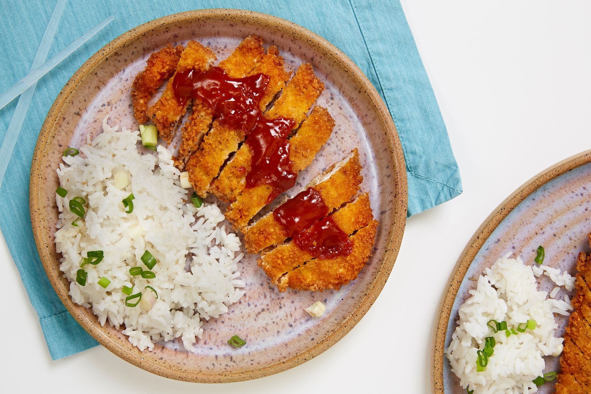

Chicken Katsu

Description
This is a recipe for katsu, which is one of my favorite foods.
I highly suggest everyone to try making this recipe at home!
Cook Time: 45 minutes
Ingredients
- 4 boneless chicken breast
- 2 tbsp flour
- 1 egg
- 1 cup panko
- 1 cup oil for frying
- salt and pepper to taste
Steps
- Season the chicken breasts on both sides with salt and pepper
- Place the flour, egg, and panko crumbs into separate shallow dishes
- Coat the chicken breasts in flour, shaking off any excess
- Dip them into the egg, then press into the panko crumbs until well coated on both sides
- Heat 1/4 inch of oil in a large skillet over medium-high heat
- Place chicken in the hot oil and cook 3-4 minutes per side
- ENJOY!